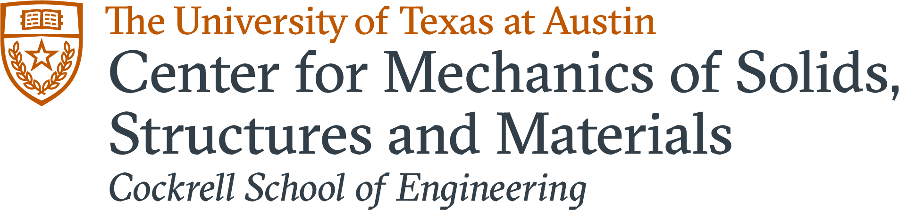

Support the next generation of research on the most pressing topics facing humanity through a monthly subscription
Federal funding for science has fallen sharply since 2013. Applying for grants wastes 100,000+ hours a year of scientists' time, and research is too opaque for most people to understand, let alone fix. At Axite Labs, our mission is to open up the world of scientific research and directly fund labs working toward a better future.
We scout out promising academic labs with the help of subject matter experts, and distill their cutting-edge work so people can directly understand and support research. In return, you receive never-before-available perks like Q&A sessions with experts, interactive demos, and even the chance to tour labs and take home early prototypes.
Step One
Explore labs we've collected together into umbrella funds based on their missions and type of research.
Step Two
Subscribe to a fund you're excited about to accelerate their progress towards the mission. Every single dollar counts.
Step Three
Receive monthly updates on the fund you’re contributing to, as well as any rewards for your contribution tier!
We are currently focused on what two areas on the frontier of scientific knowledge: longevity research and brain computer interfaces (BCI). Funding these areas could bring the 2040s and the next-generation of medical technology to us a generation sooner. Find out more about each area and the labs in them below.
What is Longevity Research?
Longevity research is, in short, research to keep you from getting sick or dying. We think this is pretty important. The labs we fund are some of the best in the world, working to understand and treat diseases like Alzheimer's, strokes, and aging. Take a look at some of the coolest science happening in the space.
Featured Labs
Professor Behnaam Aazhang is the director of the Rice Neuroengineering Initiative and the J.S. Abercrombie Professor in Electrical Engineering at Rice. He previously studied at the University of Illinois, where he received his Ph.D.
Mission: Professor Aazhang's lab works on signal processing and its application in neuroengineering. They model learning and stability in circuits of neurons, to mitigate disorders like epilepsy, Parkinson's, depression, and obesity.
Professor Aazhang directs a multi-university research center in Houston, with over 27 participating professors. He also is a fellow at IEEE and AAAS, and has received several awards from the IEEE as well as an honorary doctorate from the University of Oulu in Finland. Professor Aazhang has been working on neuroengineering since obtaining his Ph.D. in 1986.
This lab is doing a wide array of work in tackling some of the most pervasive brain disorders out there - Parkinson's, epilepsy, depression, and obesity. With electrical and computer engineering backgrounds, members of the lab have a strong track record of outputting real products to make patients' lives better.
1. Rice: Pre-surgery brain imaging
2. Rice: A flat brain microscope
3. Society for Neuroscience: Non-invasive stimulation
1. A digital cure for epilepsy! The lab is building a minimally-invasive brain implant to deliver a low-frequency electrical stimulation to the brain, effectively preventing a seizure.
2. Optimizing deep-brain-stimulation, a state-of-the-art treatment for Parkinson's disease, and developing a non-invasive version using ultrasound and magnetic methods.
3. Mapping the brain through neuroimaging, genomics, optical imaging, and data modeling, in order to lay a foundation for advanced engineering for Parkinson’s disease, aphasia, epilepsy and depression.
The Rice Neuroengineering Initiative
The Aazhang Lab is at Rice University, a pioneer in applied science programs such as nanotechnology, artificial heart research, structural chemical analysis, and space science. It has been consistently ranked the best university in the world for materials science research.
The Sessler Group is run by Professor Jonathan Sessler, the Welch Regents Chair and a Centennial Professor in Chemistry at the University of Texas at Austin. He got his Ph.D. at Stanford University in 1982.
Mission:The Sessler Group works in molecular engineering: designing and constructing molecules carefully tailored to serve as novel therapeutic or diagnostic agents.
Professor Sessler fought recurrent Hodgkin's lymphoma while completing his Ph.D. in anti-cancer research at Stanford. He founded Pharmacyclics to create new cancer drugs, acquired for $21 billion by AbbVie in 2015. Professor Sessler has 75 patents and was named UT Austin's inventor of the year in 2016.
An important part of enabling humans to live longer and happier lives is beating cancer. Very few researchers have made contributions to the anti-cancer battle as much as Professor Sessler, who has fought cancer as a researcher, patient, and entrepreneur. The Sessler Group continues to work on the cutting-edge of designer drugs to beat cancer. Steinbruck's work on anti-plaque molecules also has potential implications for treating Alzheimer's and related diseases.
1. Profile of Professor Sessler
2. Plaques in Alzheimer's Disease
3. Talk on Texaphyrin
1. Ph.D. student Axel Steinbruck is working on creating a variant of an anti-iron drug (Deferasirox) to detox or destroy amyloid plaques in the brain.
2. The lab is working with larger-than-normal porphyrin molecules - which they've appropriately named Texaphyrin.
3. Experimenting with specially designed metal-ion binding molecules to deprive and kill cancer cells.
The University of Texas College of Natural Sciences
Professor Sessler's lab is at the University of Texas at Austin, one of the world's leading research universities. The faculty include winners of the Nobel Prize, Pulitzer Prize, National Medal of Science, Wolf Prize, and countless other awards.
What is BCI Research?
BCI (brain computer interface) research seeks to understand how the brain computes and build devices to write and read from it. With BCI, we can create better bionic limbs for amputees, let the blind see, and enable higher-bandwidth links to your computer, Google Assistant, or the Internet. BCIs will likely become the de-facto way humans of the future interact with computers.
Featured Labs
The Lu Research Group is run by Professor Nanshu Lu, an Associate Professor in materials engineering at the University of Texas. She receieved her Ph.D. from Harvard University.
Mission: To understand and manufacture the next generation of flexible and stretchable electronics for interfacing with the human body.
Dr. Lu has 60 peer reviewed articles with over 5600 citations by other researchers. She has 1 issued patent and 5 currently pending ones. Dr. Lu has 12 Ph.D. students and postdoctoral researchers in her lab. Her research has been highlighted by the MIT Technology Review, CNN, BBC, NPR, and the Smithsonian.
A significant problem with the current generation of devices that interface with the brain is integration with the human body. Bioelectronics will have to be significantly more flexible, cheap, and imperceptible to be usable at scale, and the Lu research group is making incredible strides in these active areas of research.
1. UTexas: Wearable Electronics
2. Science: Flexible Electronics
3. MIT Technology Review: Profile
1. Easy and simple manufacturing of electronic-tattoos (e-tattoos)
2. Wireless and disposable tattoos to record breathing, temperature, hydration, and oxygen saturation
3. Designing imperceptible and ultra-conformable surfaces using graphene
4. Studying the adhesion between soft materials and 2D materials
The UT Austin Center for Mechanics of Solids, Structures, and Materials
Professor Lu's lab is at the University of Texas at Austin, one of the world's leading research universities. The faculty include winners of the Nobel Prize, Pulitzer Prize, National Medal of Science, Wolf Prize, and countless other awards.

The Robinson Lab is run by Professor Jacob Robinson, an Associate Professor in Electrical and Computer Engineering at Rice University. He received his Ph.D. from Cornell University, and spent time as a postdoc at Harvard University.
Mission: The Robinson Lab develops nanotechnology to monitor and control specific cells in the brain. Their goal is to understand the fundamental principles of neural function, and advance the treatment of neurological disorders.
The Robinson Lab was selected to lead a major project in DARPA's 4-year Next-gen Neurotechnology initiative, and Professor Robinson has received the DARPA Young Faculty Award. The lab consists of 14 graduate students, postdocs, and full-time research scientists.
Scientists are currently trying to improve the practicality of several different types of brain-machine interfaces: electrical, optical, and magnetic. The Robinson Lab has extremely promising projects to record from the brain in each of these three fields, and is making progress at improving all of these approaches.
1. EurekaAlert: DARPA N3
2. Science Mag: Implantable devices for nerve repair
3. Professor Robinson on EE in neuroscience
1. "Fluidic Microdrives", which use fluid flow to deliver ultraflexible electrodes into the brain without disrupting the tissue
2. Combining integrated nanophotonic elements with computational imaging to develop flat microscopes that are completely integrated onto a single silicon chip
3. Harnessing magnetic fields to manipulate cell activity with two primary approaches: materials that convert magnetic to electric fields for wireless stimulation, and rendering genetically modified neurons sensitive to a magnetic field
The Rice Department of Electrical Engineering
The Robinson Lab is at Rice University, a pioneer in applied science programs such as nanotechnology, artificial heart research, structural chemical analysis, and space science. It has been consistently ranked the best university in the world for materials science research.
You really can’t go wrong above - both of our funds contain labs doing some of the most cutting-edge research on the planet. Don’t see an area of science you’re interested in? Fear not: We are constantly on the lookout for research to push humanity into the future - sign up for our newsletter. Have a specific cause or lab in mind?
Reach out anytime and let's chat.
Currently, you can only donate towards an entire fund. While professors have many projects, having to report these projects incentivizes choosing safe, predictable science. If you’re really passionate about a specific lab or project, just get in touch with us and we’ll figure something out. We're constantly making changes, so let us know how we can be better.
Yes! We work with Universities or their designated external 501(c)3 foundations to ensure your contribution gets to the right labs while being tax-deductible.
Axite Labs puts 20% of each contribution back into growing our operation. This includes getting the word out and making it easy and interesting for everyone to understand complex research.
You probably found us today through a friend or maybe even through preliminary ads we are testing, but if we are serious about getting everyone onboard to build the future sooner, we will need to launch marketing campaigns to grow. And even if you hear about us, if you don't know what our researchers are working on, how would you know if its useful and why would you ever want to fund it? We're impact-driven, and we firmly believe reinvesting 20% of your donation will have an exponential effect on our future impact on the field.
We hope you will continue to support us as we grow this small site into a massive movement!